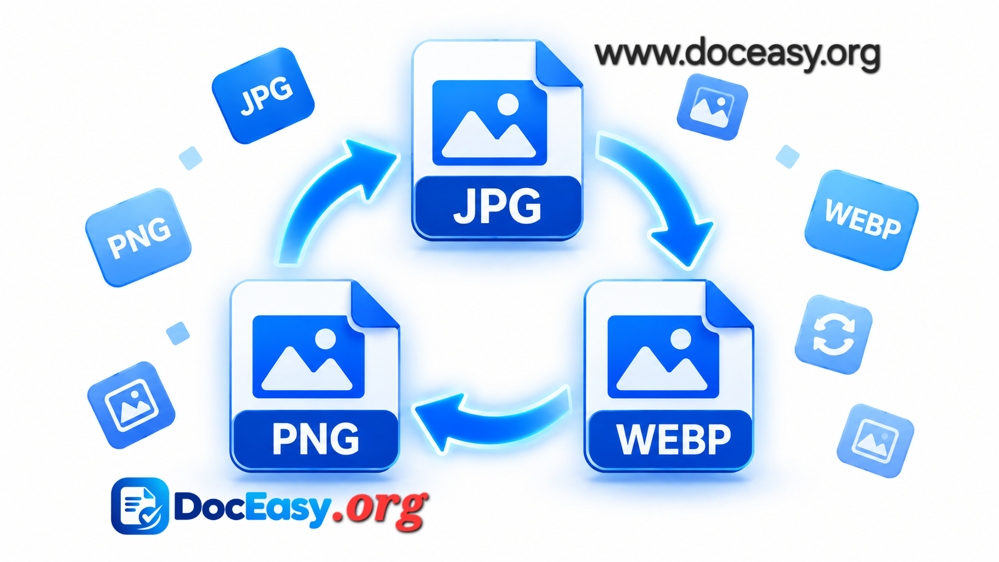

Image Format Converter
Convert images between JPG, PNG, and WEBP — 100% in your browser, completely private.
Comprehensive Architectural Guide: Image Format Conversion, Codecs & Web Standards (2026)
In modern digital workflows, graphic files constitute the cornerstone of visual information exchange. From digital cameras, smartphone screenshots, and UI mockups to legal affidavits, government recruitment portals, and high-performance websites, images are encountered in countless contexts. Yet beneath their visual surface lies a complex tapestry of binary encoding specifications, discrete compression mathematics, chroma sampling algorithms, and container metadata.
Navigating these technical boundaries is a persistent challenge for web professionals and casual users alike. An administrative portal for competitive civil service exams will abruptly reject a pristine portfolio screenshot because it was exported as a 5 MB PNG rather than a standardized JPEG under 50 KB. Conversely, an e-commerce merchandiser attempting to upload a brand logo onto a dark website theme will discover unsightly black square boxes replacing their transparent borders if the asset was mistakenly encoded into a legacy lossy container.
The DocEasy Image Format Converter delivers an instantaneous, zero-latency, private client-side transformation engine. Operating entirely within your browser thread via the native HTML5 Canvas API and WebCodecs protocols, it enables seamless conversion across JPG, PNG, and WebP formats without transmitting a single byte to external cloud infrastructure.

📷 [Demo Image: assets/images/image-converter-demo.jpg]How to Convert Images Online — Quick Action Guide
- Load Your Source File: Drag and drop any existing image file (JPG, JPEG, PNG, or WebP) directly into the dashed upload card or tap to select from your device storage.
- Inspect File Metadata: Confirm your file's original pixel dimensions (width × height) and raw binary weight displayed in the dynamic telemetry bar.
- Choose Your Destination Container: Select from the dropdown menu based on your operational requirement:
- JPEG / JPG: Best for photographic fidelity, strict portal upload limits, and maximum backward compatibility.
- PNG: Best for preserving sharp text typography, digital signatures, line art, and 8-bit alpha transparency.
- WebP: Best for modern websites, Core Web Vitals optimization, and balancing transparency with micro file weights.
- Execute Conversion & Download: Click the green "Convert & Download" button. The browser decodes, re-renders, and packages your new file in milliseconds.
1. Architectural Deep-Dive: Raster Container Mechanics
Every digital raster image is fundamentally a rectangular grid of pixels (picture elements), where each point contains numerical color values. How those numbers are organized and compressed on your disk defines the image file format:
A. JPEG (Joint Photographic Experts Group)
Established in 1992, JPEG represents the historical gold standard of continuous-tone photographic compression. JPEG utilizes a lossy compression pipeline governed by Discrete Cosine Transform (DCT) mathematics:
- Color Space Transformation: RGB signals are mapped into YCbCr space, separating luminance (Y - perceptual brightness) from chrominance (Cb/Cr - color nuances).
- Chroma Subsampling: Taking advantage of human optical limitations, color channels are typically downsampled (often 4:2:0 scheme) while preserving full luminance resolution.
- Frequency Quantization: High-frequency spatial fluctuations (subtle gradients imperceptible to the eye) are aggressively rounded and discarded.
- Limitations: JPEG lacks an alpha channel, meaning it cannot support transparent backgrounds. If transparent pixels are forced into a JPEG encoder without compositing, they often render as solid black blocks. DocEasy mitigates this by applying a clean white matte before encoding.
B. PNG (Portable Network Graphics)
Created in 1996 as an open-source replacement for GIF, PNG is built around absolute mathematical precision and lossless reconstruction:
- Deflate Compression: PNG combines LZ77 predictive string matching with Huffman coding to compress image data without altering a single pixel value.
- 2D Filtering (Predictive passes): Before compression, PNG passes pixel rows through filter algorithms (Sub, Up, Average, Paeth) that record the delta between adjacent pixels rather than absolute values, drastically improving compression ratios on flat graphics.
- Alpha Transparency: Supports a dedicated 8-bit alpha channel offering 256 gradations of translucency, enabling smooth anti-aliased shadows over complex backgrounds.
- Trade-Offs: Because it retains 100% of photographic high-frequency noise, saving a high-resolution portrait as a PNG produces files 4 to 8 times larger than an equivalent JPEG.
C. WebP (Web Picture Format)
Developed by Google and widely supported across all modern rendering engines since 2020, WebP represents the culmination of advanced video codec compression adapted for still imagery:
- VP8 Video Keyframe Roots: WebP adapts intra-frame predictive coding algorithms originally engineered for the VP8 video codec to anticipate pixel blocks from surrounding borders.
- Dual Versatility: WebP provides both lossy compression (averaging 25–34% smaller footprints than comparable JPEG files) and lossless compression (averaging 26% smaller footprints than PNG).
- Full Alpha Channel Parity: Lossy WebP supports complete alpha transparency, an advantage neither JPEG nor GIF can match.
2. Codec Comparison Matrix
| Technical Characteristic | JPEG / JPG | PNG | WebP |
|---|---|---|---|
| Compression Paradigm | Lossy (DCT Based) | Strictly Lossless (Deflate) | Hybrid (Both Lossy & Lossless) |
| Alpha Channel (Transparency) | Unsupported (Solid Matte Only) | Supported (8-bit Smooth Alpha) | Supported (Full Alpha in Lossy & Lossless) |
| Color Bit Depth | 8-bit per channel (24-bit TrueColor) | Up to 16-bit per channel (48-bit TrueColor) | 8-bit per channel |
| Text & Line Sharpness | Softened (Ringing & Mosquito Noise) | Razor Sharp (Zero Degradation) | Sharp (Excellent Edge Retention) |
| Relative Storage Footprint | Compact (Standard) | Heavy to Very Heavy | Ultra Compact (Minimum Payload) |
| Global Browser Compatibility | 100% Universal | 100% Universal | 98%+ (All Modern Browsers) |
3. Navigating Government & Academic Recruitment Portals (India 2026)
A frequent dilemma encountered by students, job applicants, and service center operators is navigating rigid file format restrictions across public service recruitment infrastructure. State and central government portals often reject files due to mismatched formats:
- The "Fake JPG" Rejection Trap: Many users take a screenshot of a document or passport photo (saved automatically by smartphones as a `.png` file) and manually rename the file extension to `.jpg`. Automated server parsers inspect the binary magic numbers at the file header (e.g., `89 50 4E 47` for PNG vs `FF D8 FF` for JPEG). When the header contradicts the extension, the application portal triggers a fatal validation error. DocEasy completely re-encodes the internal byte structure, generating legitimate standards-compliant headers.
- UPSC, SSC & IBPS Exam Portals: Civil service portals mandate strict JPG/JPEG formatting for candidate photos and digital signatures. PNG uploads are systematically rejected during form validation. Converting these assets through DocEasy produces compliant files that pass validation checks seamlessly.
- Digital Signature Transparency Cleanup: When capturing a pen signature on white paper using a smartphone, converting it to PNG allows further background removal, while converting the clean cutout back to JPG applies a uniform white background required by judicial and administrative e-filing systems.
4. Search Engine Optimization (SEO) & Core Web Vitals Impact
For webmasters, digital marketers, and software engineers, format conversion is one of the highest-leverage technical SEO optimizations available:
Largest Contentful Paint (LCP)
Google's PageSpeed algorithm heavily penalizes slow LCP scores (the time required to render the primary above-the-fold content element). In over 70% of performance audits, the LCP bottleneck is caused by a massive hero image saved as an unoptimized PNG or legacy high-bitrate JPEG. Batch converting these hero assets into modern WebP format reduces binary payload weight by up to 60%, pulling LCP render times down under the recommended 1.2-second threshold.
Bandwidth Economics & Mobile Bounce Rates
Mobile users browsing on cellular connections experience rapid fatigue when interacting with image-heavy pages. Serving lightweight WebP files ensures pages render almost instantly on smartphones, reducing bounce rates and directly contributing to higher organic search visibility.
5. Client-Side Processing: The Gold Standard of Data Privacy
Traditional file conversion utilities operate on a legacy client-server architecture: you upload your private photo to their cloud server, an automated background script runs ImageMagick or FFmpeg, and the server generates a temporary download URL. This introduces severe security vulnerabilities:
- Personal Privacy Exposure: When converting sensitive files—such as identity documents, family portraits, bank statements, or biometric signatures—uploading them to third-party cloud servers risks data leakage, unauthorized caching, and surveillance.
- Server Data Breaches: Cloud conversion platforms are frequent targets for automated scraping and credential attacks, placing user data at risk.
- Artificial Intelligence Ingestion: Some commercial conversion portals reserve the right in their terms of service to pass uploaded media through computer vision and machine learning training datasets.
The DocEasy Client-Side Architecture: DocEasy completely removes the server from the loop. When you load our converter, the operational logic runs directly on your local device's CPU and GPU. The image is read into your browser's private memory sandbox via the standard FileReader interface and rendered onto an offscreen HTML5 canvas element. The browser's native rendering engine performs the re-encoding into base64 or blob formats.
Zero bytes are ever transmitted over the network. You can verify this independently: load the DocEasy Image Converter, disconnect your internet connection or switch to airplane mode, and execute your conversions. The tool will process, re-encode, and download your files flawlessly without network access.
6. Frequently Asked Questions (FAQ)
Q1: Is DocEasy Image Format Converter completely free to use?
Yes. DocEasy is 100% free with no hidden charges, premium tiers, watermark overlays, or daily conversion limits. All transformations run locally on your device without subscription constraints.
Q2: Does converting an image result in quality loss?
Converting from JPG or WebP into PNG is mathematically lossless—no further quality is lost. When converting into JPG, DocEasy encodes at a high-fidelity 92% quality factor, which is virtually indistinguishable from the original to the human eye while eliminating excess file weight. Converting from PNG to JPG removes transparency by filling transparent regions with clean white.
Q3: Why did my transparent background turn white after converting to JPG?
The JPEG format specification does not include an alpha channel for transparency. To prevent broken rendering or black borders, DocEasy automatically composites transparent pixels onto a pure white background layer before encoding.
Q4: Can I convert iPhone HEIC photos using this tool?
Most web browsers do not yet offer native decoding support for Apple's proprietary HEIC format. To convert HEIC files, first configure your iPhone camera settings (Settings > Camera > Formats > Most Compatible) or export them as standard JPG before loading them into DocEasy.
Q5: Does converting to WebP work across all modern web browsers?
Yes. Modern versions of Google Chrome, Apple Safari (version 14 and newer), Mozilla Firefox, Microsoft Edge, Opera, and Android browsers fully support WebP decoding and display.
Q6: Can I use this image format converter offline?
Yes. Because the entire processing engine runs inside your browser using vanilla JavaScript and HTML5 Canvas, the application continues to function without an active internet connection once the page is loaded.
Q7: Does this tool alter or resize the pixel dimensions of my photo?
No. The Image Format Converter strictly alters the container codec and encoding compression. The physical pixel width and height remain completely unchanged. To resize an image's pixel dimensions, use our dedicated Image Compressor & Resizer.
Q8: How does converting to WebP help my website's Google ranking?
WebP files typically reduce page payload weights by 25% to 35% compared to standard JPEGs. This accelerates page load speeds, directly improving Core Web Vitals metrics like Largest Contentful Paint (LCP), which Google uses as an organic search ranking factor.
Q9: Does DocEasy store or log my converted files?
No. DocEasy has no backend storage infrastructure for user files. All file data exists solely in your browser's local working RAM and is discarded as soon as the tab is closed or reset.
Q10: What is the maximum file size supported?
There is no arbitrary software restriction. You can load images up to 50 MB or more. The only practical limit is the memory available on your local computer or smartphone.
Q11: Will converting my image strip away EXIF metadata?
Yes. Re-rendering an image through the browser's Canvas API naturally strips embedded EXIF metadata (including camera model, exposure settings, and GPS coordinates). This provides an extra layer of privacy protection before uploading images online.
Q12: Can I convert multiple images simultaneously?
Currently, the tool processes images individually to provide real-time visual previews and precise container control. Multi-file batch processing is on our active development roadmap.
7. Recommended Multi-Tool Workflow
Image format conversion is often just one step in preparing documents and creative assets. Combine DocEasy tools for an optimized workflow:
- Step 1 — Clean Isolated Elements: Use our Image Background Remover or Signature BG Remover to strip messy backgrounds into clean transparent PNGs.
- Step 2 — Enhance & Beautify: Optimize portraits using our AI Photo Beautifier to balance skin tones and lighting.
- Step 3 — Convert Container Format: Use this tool to convert assets into standards-compliant JPG for government uploads or lightweight WebP for website deployment.
- Step 4 — Fine-Tune File Size: If your target portal enforces strict kilobyte ceilings (e.g., under 20 KB or 50 KB), run the converted file through our Image Compressor & Resizer.
8. Summary
Navigating modern image formats doesn't require complex software suites or compromising your privacy with cloud-based upload services. The DocEasy Image Format Converter provides an instantaneous, secure, and standards-compliant bridge between JPG, PNG, and WebP formats directly inside your browser. Bookmark this page for fast, reliable image conversion whenever you need it.